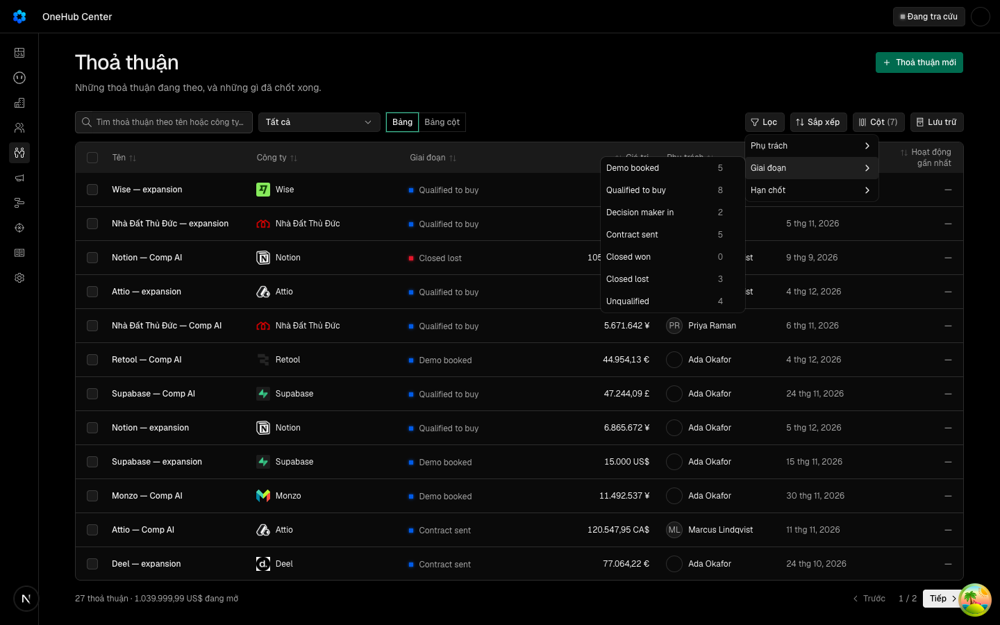
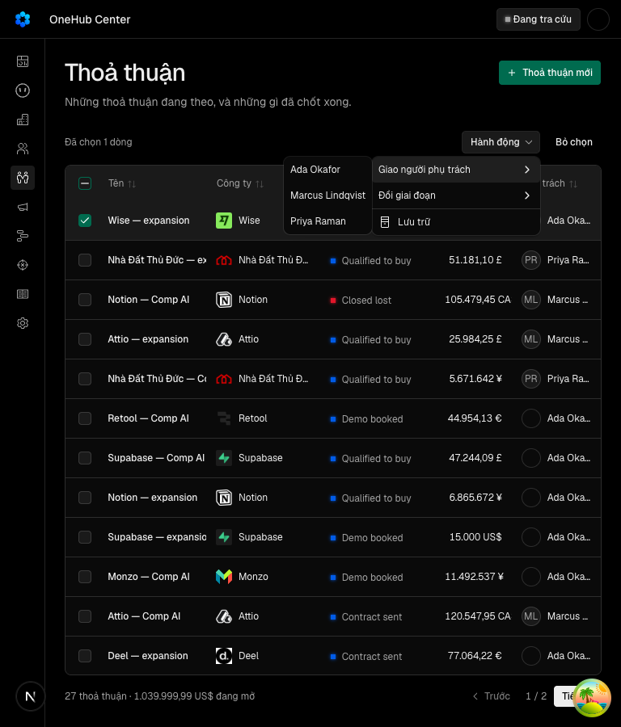

«Menu con của bộ lọc mở được trên điện thoại — không còn nằm ngoài màn ở khổ 375»
Các eval
| Eval | Tiêu chí | Loại | Verdict | run_id | verified_at |
|---|---|---|---|---|---|
| E1 | AC-1 | ui-check | PASS | minted-menu-con-loc-dien-thoai-E1-r2 | 2026-10-08T02:41:33Z |
| E2 | AC-2 | ui-check | PASS | minted-menu-con-loc-dien-thoai-E2-r2 | 2026-10-08T02:41:33Z |
| E3 | AC-3 | ui-check | PASS | minted-menu-con-loc-dien-thoai-E3-r2 | 2026-10-08T02:41:33Z |
| E4 | AC-4 | ui-check | PASS | minted-menu-con-loc-dien-thoai-E4-r2 | 2026-10-08T02:41:33Z |
| E5 | AC-5 | test | PASS | minted-menu-con-loc-dien-thoai-E5-r2 | 2026-10-08T02:41:33Z |
| E6 | AC-6 | test | PASS | minted-menu-con-loc-dien-thoai-E6-r2 | 2026-10-08T02:41:33Z |
| E7 | AC-7 | script | PASS | minted-menu-con-loc-dien-thoai-E7-r2 | 2026-10-08T02:41:33Z |
Chi tiết từng eval
PASS E1 · ui-check
AC-1: Given người đăng nhập trên app thật ở khổ 375, When ở danh sách thoả thuận mở «Lọc» rồi chạm tiêu chí «Giai đoạn», Then hộp menu con nằm trọn trong khung nhìn (mép trái ≥ 8 px, mép phải ≤ 367 px), không tràn ngang trang; When chạm (sự kiện chạm của màn cảm ứng, không phải chuột) một giai đoạn trong menu con đó, Then địa chỉ mang tham số `stage` của giai đoạn vừa chạm.
PASS E2 · ui-check
AC-2: Given khổ 375 ở danh sách cá nhân, When mở tiêu chí «Công ty» (menu con có ô tìm), Then hộp menu con và ô tìm nằm trọn trong khung nhìn, và gõ vào ô tìm thì chữ hiện trong ô.


PASS E3 · ui-check
AC-3: Given khổ 1440, When mở «Lọc» rồi «Giai đoạn» ở danh sách thoả thuận, Then menu con không bị dịch khi đủ chỗ — vị trí hộp bằng đúng vị trí khi tắt lớp dịch (lệch ≤ 1 px), ở phía nào Radix đặt nó (nút «Lọc» nằm sát mép phải nên Radix lật menu con sang trái như trước vòng này) — và hộp nằm trọn trong khung nhìn.

PASS E4 · ui-check
AC-4: (kiểm không hồi quy) Given khổ 768 ở danh sách thoả thuận đã chọn ít nhất một dòng, When mở menu thao tác hàng loạt rồi một menu con của nó (đổi người phụ trách), Then hộp menu con nằm trọn trong khung nhìn.


PASS E5 · test
AC-5: Given `DropdownMenuSubContent` của `packages/ui` mở ra, When nơi gọi không truyền `className`, Then menu con mang lớp dịch ngang cho cả phía phải (`data-[side=right]`, theo `--radix-popper-available-width`) lẫn phía trái (`data-[side=left]`); When nơi gọi truyền `className` riêng, Then `className` được ghép thêm, không thay lớp dịch; và `collisionPadding` mặc định là 8 (hiệu quả đo ở AC-1: mép phải ≤ 367 ở khổ 375).
Ran 3 tests across 1 file. [817.00ms]
PASS E6 · test
AC-6: Given các bài kiểm sẵn có của bảng dùng chung và bộ lọc (`data-table-loc-ro`, `data-table-locale`, `render-diff`, `lai-ra-man` của `packages/ui`; `bang-crm-loc-ro` của app), When chạy lại sau thay đổi, Then cả năm tệp thoát 0 không sửa kỳ vọng.
Ran 9 tests across 1 file. [3.42s]
PASS E7 · script
AC-7: Given tệp giao diện sửa của vòng (`dropdown-menu.tsx`), When chạy sàn thiết kế của kho, Then không vi phạm P0, và không tệp nào ngoài `packages/ui` thêm `className` đổi vị trí cho menu con.
(đuôi output rỗng — hai lệnh nối nhau đều hoàn tất)
Eval không phân biệt (Analyst)
Vòng verify
- Round 1: E2 không đạt — cảnh ô tìm Công ty lọc hết nên menu con rỗng, ảnh không có mục nào; răng khong-cham-noi-goi cũng chưa bắt thẻ nhiều dòng. Returned to implementation (sửa ở 483fbb30a).
- Round 2: E1, E2, E3, E4, E5, E6, E7 đều đạt; bảy lệnh suite đạt. Verdict PASS, chờ người ký ở Cổng Bằng chứng.